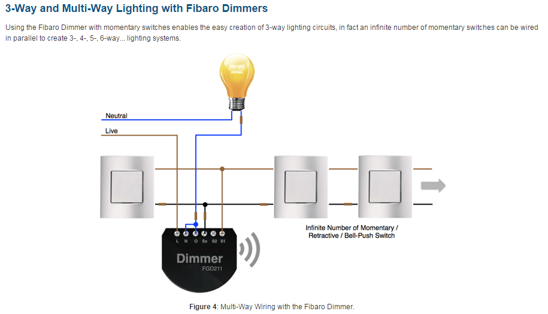

Hi,
I have posted this over on automatedhomes.co.uk, but I guess the lack of response suggests it's the wrong forum, so I'm trying here.
I would quite like to set up OpenRemote for Z-Wave, connected to my QNAP, OpenRemote state I need "Aeon Z-Stick Series 2". Does that mean I don't need to buy a controller such as the Fibaro Home Center 2 / Home Center Lite?
Is there any disadvantage to going down the OpenRemote route? I do see there is a limit to 10 devices with the Free OpenRemote solution. The "Professional" license of OpenRemote is 150 Euros, and the hardware costs seem to be a fraction. Aeon Z-Stick = £41.00 v. Home Center 2 / lite £497 / £250.
This massive price difference makes me think I'm not getting something.
Many thanks
W.
{kind=link}
|
Note that there is a New Z-Wave 2.0.0 Release. You can use this new free version with unlimited number of devices. The device limit has been removed. With the new version it's possible to configure Z-Wave associations and Z-Wave device parameter settings - you do not need another software in order to do that. What kind of Z-Wave devices do you intend to use ? |
|
Hi Rainer, Many thanks for your reply. Good to know about the device limit, but is one limited to the level of customisation available with only the free version? To start with, I'd like to control the lighting in our entrance hall. There're 5 doors leading off the hall, but only one light switch! To achieve this, I intend to get a Fibaro FGD211 dimmer module and connect it up to 1 dimmer and 4 momentary switches, as shown:  To achieve this, I plan to: Also, I would like to have the hall lights come on when the front door is opened: Finally, have a table lamp come on at dusk and switch off at a set time. All this should be controllable via the Aeon Z-stick 2, connected to a QNAP storage device, running OpenRemote. Of course, all this can be controlled via an Android mobile device, through the OpenRemote App. If this works according to plan, I hope to add additional sensors / switches to control outside lighting and other electrical devices. Do you think this is achievable with OpenRemote and the Z-Stick, or will this require a more traditional controller? Many thanks for your help. W. |
|
Your initial list of Fibaro devices (Fibaro Universal Dimmer 500W FGD-211, Fibaro Double Relay Switch FGS-221, Fibaro Door/Window Sensor FGK 101-107, Fibaro Motion Sensor FGMS-001) are very well supported. It's even possible to configure a multi instance association in order to address the second channel of the Fibaro Double Relay Switch FGS-221 from a Z-Wave device that supports the Z-Wave COMMAND_CLASS_MULTI_CHANNEL_ASSOCIATION (e.g. turn on the light that is connected to the second channel of the Fibaro Double Relay Switch FGS-221 if Fibaro Motion Sensor FGMS-001 detects motion). I'm not 100% sure about the Philio sensor because we've never tested it but it shouldn't be a problem because the Z-Wave COMMAND_CLASS_SENSOR_MULTILEVEL has already been implemented. I think that your lighting installation is achievable with OpenRemote. I don't see any particular Z-Wave problems and the rest is standard OpenRemote stuff (rules). |